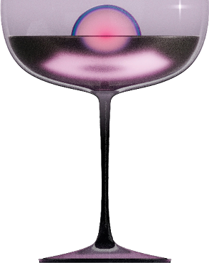

5
당신은 어떤 것에 중독된 적이 있나?
증독의 의미가 특정한 물건이나 사람, 어떤 행동에 대해 끊임없이 생각하는 걸 뜻한다면, 나는 지나치게 그런 쪽이다. 행동을 통제하지 못하기 때문에, 생각에 그치지 않고 물건을 사거나 음식을 먹고, 그 사람과 자버린다. 한 가지의 집착이 내 인생을 완전히 지배해버리는 것을 막기 위한 유일한 방법은 새로운 것에 집착하는 것이다.
가장 집착하는 대상은 무엇인가?
만취 상태를 유지할 수 있는 온갖 화학적 수단에 집착한다. 나는 열다섯 살 때부터 취하기 위해 술을 마셨고 약도 했다. 몇 번 끊은 것을 빼고는 30대 후반까지 줄곧 그랬다. 물론, 한 가지만 계속한 건 아니다. 대마초 대신 알코올, 알코올 대신 대마초, 헤로인 대신 코카인, 헤로인 대신 알코올, 이 모든 것 대신 알약. 칵테일은 물보다 더 많이 마셨다. 이 기간 동안 어떻게 술과 약을 구할지에 모든 정신이 쏠려 있었고, 원하던 것을 얻으면 더 많은 양을 찾아 헤맸다. 그러나 생각해보면 술과 약은 이보다 더 근본적이고 강렬한 나의 최고의 집착, 섹스 중독을 숨기기 위한 일종의 연막이었다. 약물중독자 시절 나는 취하면 성적 집착을 잊는다는 걸 깨달았다. 내 몸에 약이나 술이 들어가면, 내가 누구와 자는지도 상관없었고 심지어는 섹스 자체에도 관시을 잃었다. 역설적이게도 술과 약은 내게 힘을 심어주었다.
좋은 작가가 되기 위해서는 꼭 어떤 종류의 중독이 필요하다고 생각하나?
글을 쓸 때마다 보이지 않는 누군가가 내 멱살을 잡고
타자기 앞에 꿇어앉힌 후 글을 쓰지 않으면 떄려눕히겠다고 협박하는 것 같은 기분이 든다. 이런 상황에서 글을 쓰는 건 힘들다. 물론, 평소 내 문체가 고통스럽고 냉소적인 이유가 그 보이지 않는 누군가 덕분이긴 하지만. 질문에 다시 대답하자면, 집착이나 중독이 글에 영향을 끼친다고 생각한다.
문학적으로 집착하는 주제가 있나?
권력 콤플렉스, 몸집이 작은 사람들, 지나치게 키가 큰 사람들, 인체 비율, 정신과 의사들, 치매, 고독, 도시인들의 소외, 산책, 스포츠카, 재미 없는 섹스, 초월적 이상주의, 그리고 지금 우리가 살아가는 우주는 공존하는 여러 우주의 하나일 뿐이며 다른 우주들은 이곳보다 이상할 수 있다는 확신.
다른 작가들이 집착하는 것 중, 공감하는 게 있나?
인간관계의 질에 집착하는 작가들은 존경한다. 예를 들어 어떤 대화가 지닌 진정한 의미나 누군가와의 키스가 정확하게 어떻게 느껴졌는지, 또는 연인이나 친구, 가깝게 지내던 이들과의 이별이 어떤 색깔을 띠는지를(만약 이별에 색깔이 존재한다면) 글로 정확하게 표현하려는 집착 말이다. 나는 이런 식으로 쓰인 소설을 좋아하지만, 내가 직접 그렇게 하진 않는다. 나는 “자기 인식”이라는 것이 꿈에 불과 하고 ’성격’ 이라는 것은고정관념에 불과하다고 믿는다. 우리는 모두 점점 기억을 잃어가는 유령일 뿐이다.
당신의 모든 중독은 섹스와 관련 있나?
그럴지도 모른다. 예전에 내 주치의가 말하길, 나의 성욕이

William Self / Author
SEX&DRUGS